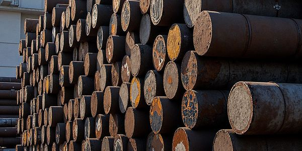
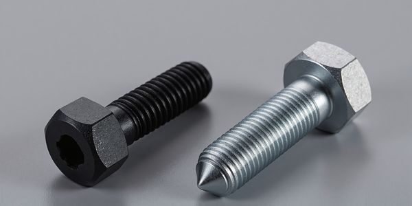

Oberflächenbehandlung
Beschichtungen hochfester Verbindungselemente: Wasserstoffversprödung
Verfahren, Prüfung und Anwendung vor Serienbestellung gemeinsam beurteilen.
Aktualisiert Artikel lesen
Technische Informationen
Praxisleitfäden zu Normen, Festigkeitsklassen, Werkstoffen und Beschichtungen. Technische Anforderungen in klare Einkaufsspezifikationen umsetzen.
Oberflächenbehandlung
Verfahren, Prüfung und Anwendung vor Serienbestellung gemeinsam beurteilen.
Werkstoffkunde
Gewindezustand, Schmierung und Montageversuche vor Serienbestellung abstimmen.

Sonderfertigung
Zeichnungen, Abnahmeanforderungen und Lieferangaben für eine effiziente Prüfung der Sonderteilanfrage vorbereiten.

Produktauswahl
Kopfraum, Werkzeugzugang und Auflagegeometrie vor der Auswahl für die Serienmontage vergleichen.

Produktauswahl
Schraube und Scheiben gemeinsam festlegen; Einbauraum, Material, Oberfläche und Serienbedarf bestätigen.

Werkstoffkunde
Bei Verbindungselementen aus Chrom-Molybdän-Stahl Werkstoffnorm, Wärmebehandlungszustand und Fertigteilanforderungen festlegen.

Oberflächenbehandlung
Vor der Anfrage Beschichtungsverfahren, Gewindepassung und Wasserstoffversprödung berücksichtigen.
Normen
Einkaufsleitfaden zu M39–M64, Garnituranforderungen und Dokumentation nach GB/T 32076.7.

Festigkeitsklasse
Festigkeitskennzeichnungen lesen, Nennwerte vergleichen und eine Spezifikation für die gesamte Verbindung erstellen.
Zeichnung und Anforderungen für ein Angebot übermitteln.